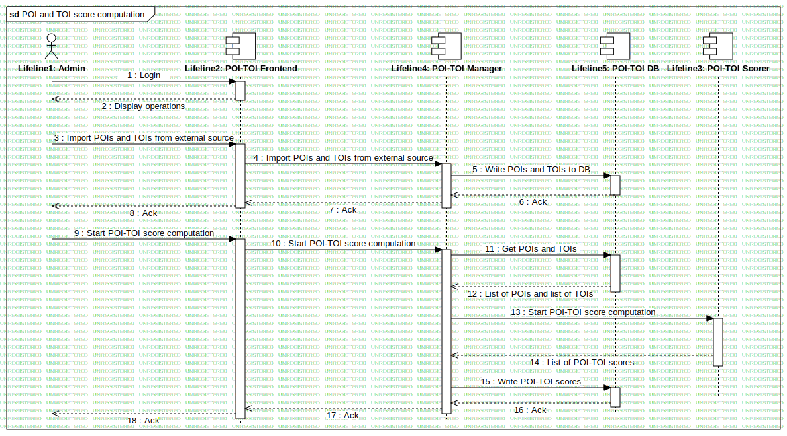

POI-TOI score computation
UMLInteraction
RASTA
::
Requirement Analysis
::
OR7 - Itinerari turistici in Umbria
::
Sequence - POI-TOI score computation
::
POI-TOI score computation
Description
none
Diagrams

POI and TOI score computation
Participants
Lifeline1: Admin
Lifeline2: POI-TOI Frontend
Lifeline3: POI-TOI Scorer
Lifeline5: POI-TOI DB
Lifeline4: POI-TOI Manager
Messages
Login (Lifeline1→Lifeline2)
Display interface (Lifeline2→Lifeline1)
Import POIs and TOIs from external source (Lifeline1→Lifeline2)
Import POIs and TOIs from external source (Lifeline2→Lifeline4)
Write POIs and TOIs to DB (Lifeline4→Lifeline5)
Ack (Lifeline5→Lifeline4)
Ack (Lifeline4→Lifeline2)
Ack (Lifeline2→Lifeline1)
Start POI-TOI score computation (Lifeline1→Lifeline2)
Start POI-TOI score computation (Lifeline2→Lifeline3)
Write POI-TOI scores (Lifeline3→Lifeline4)
Write POI-TOI scores (Lifeline4→Lifeline5)
Ack (Lifeline5→Lifeline4)
Ack (Lifeline4→Lifeline3)
Ack (Lifeline3→Lifeline2)
Ack (Lifeline2→Lifeline1)
Properties
Name
Value
name
POI-TOI score computation
stereotype
null
visibility
public
isReentrant
true
Owned Elements
POI and TOI score computation